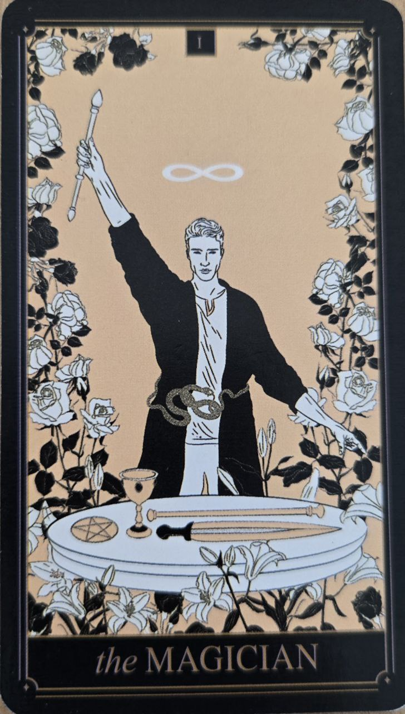

Mág je karta vedomej tvorby, koncentrácie a schopnosti premeniť myšlienku na realitu. V Tarote predstavuje prvý aktívny krok po Bláznovi — moment, keď človek už len nesníva, ale začína konať.
Táto karta ukazuje, že potenciál existuje, ale jeho realizácia závisí od pozornosti, zručností a rozhodnutia využiť to, čo už máme k dispozícii.
Mág symbolizuje vôľu, sústredenie a schopnosť ovplyvniť situáciu. Hovorí o období, keď má človek nástroje na zmenu, ale musí ich vedome použiť.
Nie je to karta „zázrakov“, skôr karta vedomej práce s realitou. Ukazuje, že výsledok nie je náhoda, ale dôsledok nasmerovania energie.
Na karte sa zvyčajne nachádza postava stojaca medzi nebom a zemou, často s jednou rukou zdvihnutou a druhou smerujúcou nadol.
Na stole pred ňou bývajú symboly štyroch živlov, ktoré predstavujú základné oblasti ľudskej skúsenosti — myseľ, emócie, akciu a stabilitu.
Tento obraz ukazuje myšlienku „ako hore, tak dole“ — prepojenie vnútorného zámeru a vonkajšieho sveta.
Mág je prvá karta po Bláznovi, ktorá už nesymbolizuje iba potenciál, ale aj schopnosť ho aktívne formovať.
Často sa interpretuje ako moment uvedomenia: „mám viac možností, než som si myslel“.